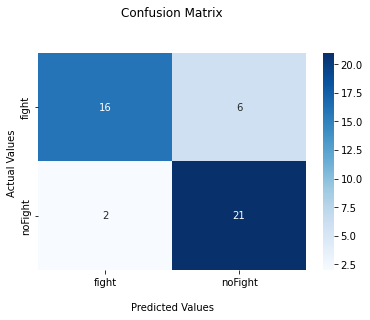

Mounted at /content/drivedevice(type='cuda', index=0)/content/Fight_Detection_From_Surveillance_Cameras-PyTorch_ProjectFineTuninng and Training
Downloading: "https://download.pytorch.org/models/r2plus1d_18-91a641e6.pth" to /root/.cache/torch/hub/checkpoints/r2plus1d_18-91a641e6.pthExtracting Data of Class: fight
Extracting Data of Class: noFight# Train and evaluate
model_ft, hist = Fight_utils.train_model(device,model_ft, dataloaders_dict, criterion, optimizer_ft, num_epochs=epochs)Epoch 0/29
----------
train Loss: 0.6863 Acc: 0.6143
val Loss: 0.5424 Acc: 0.6444
Epoch 1/29
----------
train Loss: 0.5675 Acc: 0.7190
val Loss: 0.3053 Acc: 0.8667
Epoch 2/29
----------
train Loss: 0.3378 Acc: 0.8667
val Loss: 0.3344 Acc: 0.8889
Epoch 3/29
----------
train Loss: 0.4324 Acc: 0.8476
val Loss: 0.3184 Acc: 0.8667
Epoch 4/29
----------
train Loss: 0.4694 Acc: 0.8238
val Loss: 0.3480 Acc: 0.8667
Epoch 5/29
----------
train Loss: 0.2858 Acc: 0.8857
val Loss: 0.5155 Acc: 0.8222
Epoch 6/29
----------
train Loss: 0.2248 Acc: 0.9286
val Loss: 0.5998 Acc: 0.8000
Epoch 7/29
----------
train Loss: 0.1387 Acc: 0.9476
val Loss: 0.3467 Acc: 0.8667
Epoch 8/29
----------
train Loss: 0.3268 Acc: 0.8905
val Loss: 0.5603 Acc: 0.8444
Epoch 9/29
----------
train Loss: 0.1951 Acc: 0.9381
val Loss: 0.4016 Acc: 0.8889
Epoch 10/29
----------
train Loss: 0.2122 Acc: 0.9000
val Loss: 0.4281 Acc: 0.8667
Epoch 11/29
----------
train Loss: 0.2384 Acc: 0.9095
val Loss: 0.4159 Acc: 0.8444
Epoch 12/29
----------
train Loss: 0.2348 Acc: 0.9238
val Loss: 0.6535 Acc: 0.8444
Epoch 13/29
----------
train Loss: 0.1036 Acc: 0.9524
val Loss: 0.5720 Acc: 0.8444
Epoch 14/29
----------
train Loss: 0.3157 Acc: 0.9095
val Loss: 0.4441 Acc: 0.8000
Epoch 15/29
----------
train Loss: 0.1786 Acc: 0.9429
val Loss: 0.5130 Acc: 0.8667
Epoch 16/29
----------
train Loss: 0.2100 Acc: 0.9190
val Loss: 0.3575 Acc: 0.8667
Epoch 17/29
----------
train Loss: 0.1679 Acc: 0.9429
val Loss: 0.4090 Acc: 0.8667
Epoch 18/29
----------
train Loss: 0.1439 Acc: 0.9429
val Loss: 0.4280 Acc: 0.8444
Epoch 19/29
----------
train Loss: 0.2130 Acc: 0.9238
val Loss: 0.5203 Acc: 0.8444
Epoch 20/29
----------
train Loss: 0.1116 Acc: 0.9667
val Loss: 0.4135 Acc: 0.8444
Epoch 21/29
----------
train Loss: 0.0606 Acc: 0.9810
val Loss: 0.5160 Acc: 0.8222
Epoch 22/29
----------
train Loss: 0.1252 Acc: 0.9667
val Loss: 0.4127 Acc: 0.8222
Epoch 23/29
----------
train Loss: 0.0626 Acc: 0.9810
val Loss: 0.6551 Acc: 0.8444
Epoch 24/29
----------
train Loss: 0.2403 Acc: 0.9190
val Loss: 0.3066 Acc: 0.8889
Epoch 25/29
----------
train Loss: 0.1776 Acc: 0.9286
val Loss: 0.3373 Acc: 0.8667
Epoch 26/29
----------
train Loss: 0.1547 Acc: 0.9429
val Loss: 0.3015 Acc: 0.8444
Epoch 27/29
----------
train Loss: 0.0759 Acc: 0.9762
val Loss: 0.2824 Acc: 0.8667
Epoch 28/29
----------
train Loss: 0.1131 Acc: 0.9476
val Loss: 0.5228 Acc: 0.8667
Epoch 29/29
----------
train Loss: 0.1883 Acc: 0.9238
val Loss: 0.5376 Acc: 0.8667
Training complete in 34m 55s
Best val Acc: 0.888889since = time.time()
test_loader = torch.utils.data.DataLoader(dataset=test_dataset, batch_size=batch_size, shuffle=True)
model_ft.eval()
running_loss = 0.0
running_corrects = 0
y_test = []
y_pred = []
for inputs, labels in test_loader:
inputs = inputs.to(device)
labels = labels.to(device)
optimizer_ft.zero_grad()
with torch.set_grad_enabled(False):
outputs = model_ft(inputs)
loss = criterion(outputs, labels)
_, preds = torch.max(outputs, 1)
running_loss += loss.item() * inputs.size(0)
running_corrects += torch.sum(preds == labels.data)
y_test += labels.data.tolist()
y_pred += preds.data.tolist()
epoch_loss = running_loss / len(test_loader.dataset)
epoch_acc = running_corrects.double() / len(test_loader.dataset)
time_elapsed = time.time() - since
print('Training complete in {:.0f}m {:.0f}s'.format(time_elapsed // 60, time_elapsed % 60))
print('Loss: {:.4f} Acc: {:.4f}'.format(epoch_loss, epoch_acc))Training complete in 0m 4s
Loss: 0.4137 Acc: 0.8222from sklearn.metrics import confusion_matrix
#Generate the confusion matrix
cf_matrix = confusion_matrix(y_test, y_pred)
print(cf_matrix)[[16 6]
[ 2 21]]import matplotlib.pyplot as plt
import seaborn as sns
ax = sns.heatmap(cf_matrix, annot=True, cmap='Blues')
ax.set_title('Confusion Matrix\n\n');
ax.set_xlabel('\nPredicted Values')
ax.set_ylabel('Actual Values ');
## Ticket labels - List must be in alphabetical order
ax.xaxis.set_ticklabels(['fight','noFight'])
ax.yaxis.set_ticklabels(['fight','noFight'])
## Display the visualization of the Confusion Matrix.
plt.show()
Save and Load the Model
# Later to Load the Saved Model:
%%capture
PATH="/content/drive/MyDrive/Fight_Detection_Project/First_Run_State70_Seq16_Batch4/model_16_70_4_0.88.pth"
model_ft = torchvision.models.video.r2plus1d_18(pretrained=True, progress=True)
num_ftrs = model_ft.fc.in_features #in_features
model_ft.fc = torch.nn.Linear(num_ftrs, 2) #nn.Linear(in_features, out_features)
model_ft.load_state_dict(torch.load(PATH))
model_ft.to(device)
model_ft.eval()Predict
%%capture
# Download Videos From Youtube for Testing
Fight_utils.downloadYouTube("https://www.youtube.com/watch?v=dxOpYEFf9zs&ab_channel=PluggingDaily", "/content/")
Fight_utils.downloadYouTube("https://www.youtube.com/watch?v=rEiEJT6B7Yo&ab_channel=TelegramVideo","/content/")
# Rename the Videos
!mv "/content/CRAZY FIGHT INSIDE OF CHINESE RESTAURANT 2020.mp4" "/content/test1.mp4"
!mv "/content/Fight outside Dubai Restaurant and Lounge.mp4" "/content/test2.mp4"# Extract video frames of it (noFight Video)
%%capture
!y | ffmpeg -ss 00:00:00 -i /content/test1.mp4 -t 00:00:10 -c copy /content/out1.mp4
# Extract video frames of it (Fight Video)
!y | ffmpeg -ss 00:02:28 -i /content/test1.mp4 -t 00:00:10 -c copy /content/out2.mp4
# Extract video frames of it (Fight & noFight Video)
!y | ffmpeg -ss 00:01:28 -i /content/test1.mp4 -t 00:02:28 -c copy /content/out3.mp4
# Extract video frames of it (Fight & noFight Video)
!y | ffmpeg -ss 00:01:10 -i /content/test2.mp4 -t 00:00:50 -c copy /content/out4.mp4print(Fight_utils.FightInference(video_file_path1,CLASSES_LIST,model_ft,device,SEQUENCE_LENGTH))
print(Fight_utils.FightInference_Time(video_file_path1,CLASSES_LIST,model_ft,device,SEQUENCE_LENGTH))noFight
[('noFight', 0.94467), ('fight', 0.05533)]
***********
time is: 0.9961555004119873
noFightprint(Fight_utils.FightInference(video_file_path2,CLASSES_LIST,model_ft,device,SEQUENCE_LENGTH))
print(Fight_utils.FightInference_Time(video_file_path2,CLASSES_LIST,model_ft,device,SEQUENCE_LENGTH))fight
[('fight', 1.0), ('noFight', 0.0)]
***********
time is: 1.4432260990142822
fightprint(Fight_utils.FightInference(video_file_path3,CLASSES_LIST,model_ft,device,SEQUENCE_LENGTH))
print(Fight_utils.FightInference_Time(video_file_path3,CLASSES_LIST,model_ft,device,SEQUENCE_LENGTH))fight
[('fight', 1.0), ('noFight', 0.0)]
***********
time is: 1.2459924221038818
fightprint(Fight_utils.FightInference(video_file_path4,CLASSES_LIST,model_ft,device,SEQUENCE_LENGTH))
print(Fight_utils.FightInference_Time(video_file_path4,CLASSES_LIST,model_ft,device,SEQUENCE_LENGTH))fight
[('fight', 0.99943), ('noFight', 0.00057)]
***********
time is: 4.212649822235107
fightInference on Video Stream
noFight Video
Fight Video
Video Contains Fight and noFight Video with Seq 16
Video Contains Fight and noFight Video with Seq 16
Save Videos to Drive
# Save Video to Drive
!cp '/content/inferOut_1_16.mp4' "/content/drive/MyDrive/Fight_Detection_Project/"
!cp '/content/inferOut_2_16.mp4' "/content/drive/MyDrive/Fight_Detection_Project/"
!cp '/content/inferOut_3_16.mp4' "/content/drive/MyDrive/Fight_Detection_Project/"
!cp '/content/inferOut_4_16.mp4' "/content/drive/MyDrive/Fight_Detection_Project/"